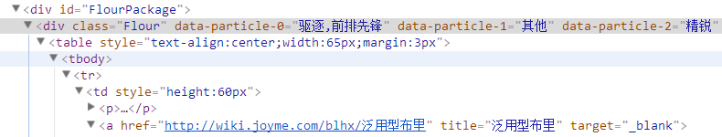

试玩一下JS爬虫
从碧蓝WIKI抓取角色图片
用到superagent, cheerio, request等库
先上代码地址 : Github
实现步骤
步骤1 : 获取角色首页
舰娘首页有全部角色的列表
用superagent获取该页
1 | superagent |
superagent用法参照文档
步骤2 : 分析角色首页
在一个id="FlourPackage"的div下面,
有一系列class="Flour"的div, 分别各为一个角色的小图框,
再下面, a标签中有角色名和链接

用cheerio取出这些信息
1 | var $ = cheerio.load(data) // 此处data为上一步读取回来的整个页面 |
cheerio用法参照文档, 基本和JQuery一致
步骤3 : 获取各角色图片链接
一个角色页的栗子
图片链接在各类似如下的元素里
1 | <img alt="欧根亲王立绘.jpg" src="http://p9.qhimg.com/dr/350__/t012066ae5fe5a20298.jpg" ... /> |
图片链接无明显规律, 参照步骤1的方法, 获取每个角色页, 然后用cheerio取出图片链接
1 | let imgLinks = [] |
这里用了正则形式的属性选择器img[alt*="xxxx"], 选出 有alt属性且alt属性含有xxxx子串的img标签
参考CSS选择器中的正则表达式
步骤4 : 下载保存图片
1 | request(url) |
request用法参照文档
其他
使用了async控制并发数async用法参照文档
后续优化
添加抓取间隔等 ( 现在连续抓取后会被暂时屏蔽 )
最后
然而这些图片图像质量并不好..
链接
superagent
cheerio
request
async
fs.createWriteStream
CSS选择器中的正则表达式